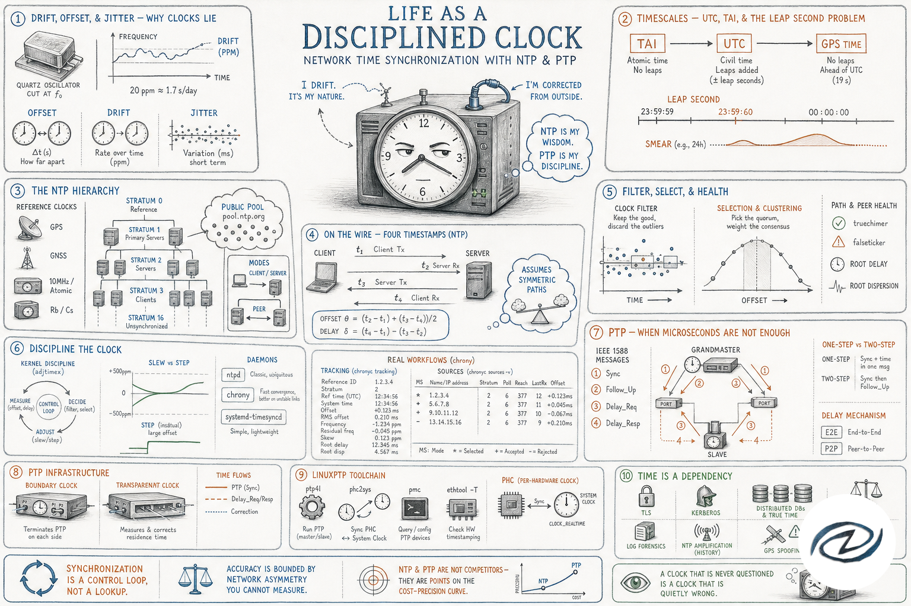

Life as a disciplined clock 2026-07-05model: gpt-image-2  Network time synchronization with NTP and PTP Network time synchronization with NTP and PTP Drift, offset, and jitter — why clocks lieTimescales — UTC, TAI, and the leap second problemThe NTP hierarchy — strata, pools, and reference clocksThe wire algorithm — four timestamps against an asymmetric networkDiscipline — slewing, stepping, and the daemons that do itPTP — when microseconds are not enoughPTP infrastructure — boundary clocks, transparent clocks, and linuxptpTrust, attacks, and why everything needs the right time